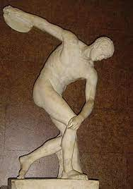
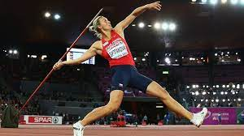
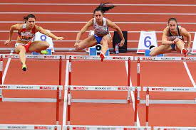
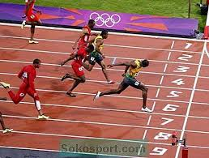
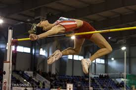
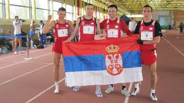

Отвори почетну (pocetna.html) страницу
РУКОМЕТ
Тема о рукомету
Рукомет (енгл. handball) је екипни спорт са лоптом, у ком се такмиче двe екипе са по 7 играча (6 играча у пољу + 1 голман) на свакој страни.
Игра траје два пута по 30 минута, а циљ је дати више голова од противника. Лопта се између играча додаје рукама слично као у кошарци али са
нешто мањом лоптом и уз другачија правила вођења лопте. Модерни рукомет се обично игра у затвореним дворанама, док на отвореном постоје
варијанте у облицима великог рукомета и Чешког рукомета (који су се чешће играли у прошлости), као и рукомета на песку. Амерички рукомет и
Ирски рукомет су потпуно другачији спортови од рукомета. Игра је веома брза и укључује контакт телом када одбрамбени играчи покушавају
зауставити нападаче да приђу голу. Контакт је једино дозвољен када је одбрамбени играч потпуно испред нападача, тј. између нападача и гола.
Било какав контакт са стране или отпозади се посебно сматрају опасним, и за то се добијају казне. Кад одбрамбени играч успешно заустави нападача,
игра се зауставља и тим који напада наставља игру са места прекршаја или линије девет метара. За разлику од кошарке, где је играчима дозвољено
да направе 5 фаулова у игри (6 у НБА), рукометашима је дозвољен неограничен број прекршаја, који ремете ритам нападачког тима и сматрају се
добром одбраном. Рукомет је такође веома груб спорт.Голови се постижу веома често; обично обе екипе постигну минимално по 20 голова,
а није неуобичајено да обе екипе постигну и више од 30 голова. Ово није био случај у ранијој историји игре, али је офанзивна игра побољшана
од краја 1980-их, посебно коришћење контранапада после неуспелог напада другог тима, тако да је број голова порастао.
Прочитај страницу о рукомету!
АТЛЕТИКА






Прочитај страницу о атлетици!